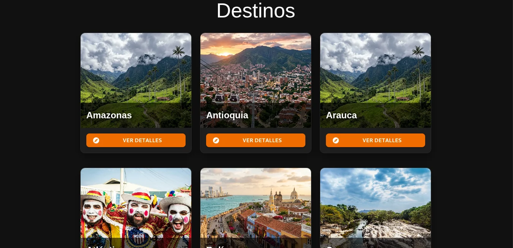
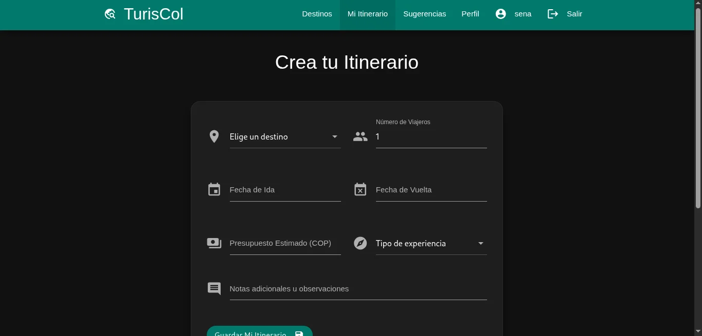
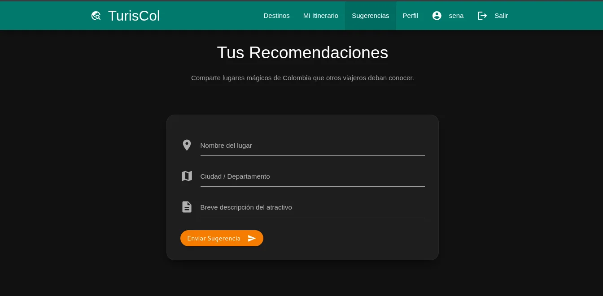
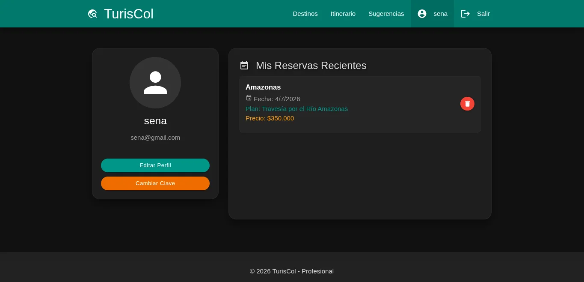

TurisCol es una aplicación web full-stack para planificar viajes turísticos en Colombia. Los usuarios pueden explorar destinos por departamento (Antioquia, Amazonas, Bolívar, Magdalena, entre otros), crear itinerarios personalizados, gestionar reservas y enviar sugerencias de nuevos lugares turísticos con un flujo de aprobación por parte del administrador.
Arquitectura
La aplicación sigue un diseño monolítico con separación clara de responsabilidades. El backend en Express.js expone una API RESTful, el frontend son páginas HTML con JavaScript vanilla y Materialize CSS, y la base de datos usa una arquitectura híbrida: SQLite para datos relacionales y NeDB para sugerencias.
Tecnologías Utilizadas
Node.js + Express
Servidor web robusto con enrutamiento modular y middleware
JavaScript Vanilla
Frontend sin frameworks, con lógica estructurada en módulos y componentes
Materialize CSS
Framework de diseño Material Design con tema oscuro personalizado
SQLite + NeDB
Persistencia políglota: SQL relacional para usuarios/itinerarios, NoSQL para sugerencias
JWT + bcrypt
Autenticación segura con tokens de 30 minutos y contraseñas hasheadas
Jest + Supertest
Pruebas unitarias y de integración con cobertura mínima del 80%
Características Principales
- Exploración de destinos — navegar por departamentos colombianos con información detallada, planes turísticos y precios en COP
- Itinerarios personalizados — crear, editar y eliminar planes de viaje con fechas de ida y vuelta, número de viajeros, presupuesto y notas
- Reservas — gestionar reservas de planes turísticos con historial en el perfil del usuario
- Sugerencias con aprobación — los usuarios pueden sugerir nuevos destinos; los administradores los aprueban, editan o rechazan
- Autenticación completa — registro, inicio de sesión con JWT, actualización de perfil y cambio de contraseña
- Roles de usuario — usuarios normales y administradores con paneles de gestión diferenciados
- Seguridad — helmet (headers HTTP seguros), rate limiting (100 solicitudes/15 min por IP), validación con express-validator, CORS configurado
- Interfaz responsiva — diseño adaptable a móviles, tablets y escritorio con tema oscuro personalizado
- Validaciones en cliente y servidor — fechas no pueden ser pasadas, campos requeridos, formato de email, longitud de contraseña
API Endpoints
La API expone endpoints RESTful para cada recurso:
- Auth: POST /api/auth/login
- Usuarios: CRUD completo + cambio de contraseña
- Itinerarios: CRUD con alcance por usuario y vista de administrador
- Sugerencias: CRUD con flujo de aprobación (solo admin puede aprobar)
- Reservas: creación, listado por usuario y eliminación
Galería





Despliegue
La aplicación está configurada para desplegarse en Render mediante el archivo
render.yaml. Usa Node.js 20 como runtime y SQLite como base de datos embebida,
lo que simplifica el despliegue al no requerir un servicio de base de datos externo.
Pruebas
El proyecto incluye suites de pruebas con Jest y Supertest para los modelos de datos (User, Itinerary, Suggestion) usando SQLite en memoria y NeDB simulado, con umbrales de cobertura del 80% en ramas, funciones, líneas y sentencias.